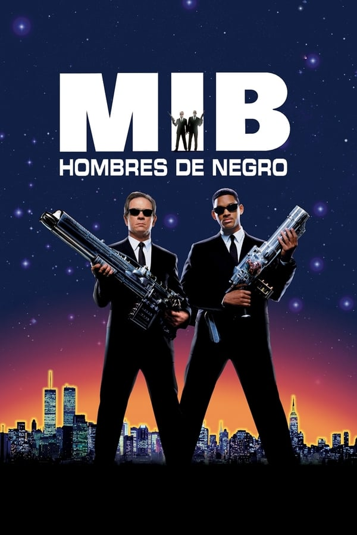
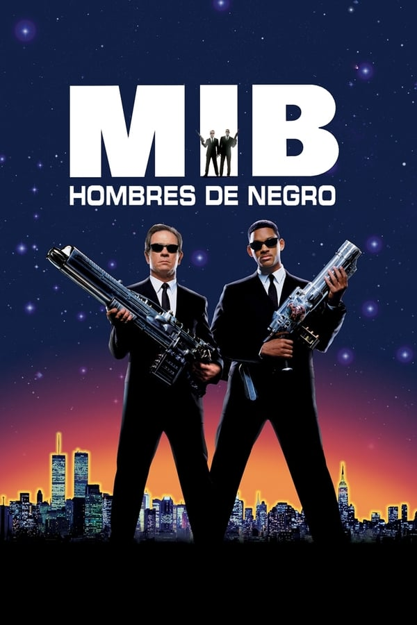

Cumpleaños: Sep 25, 1968
Lugar de Nacimiento: Philadelphia, Pennsylvania, EEUU
Película mejor valorada: Men In Black
Willard Carroll Smith, Jr. (Filadelfia, Pensilvania; 25 de septiembre de 1968), más conocido como Will Smith, es un actor, rapero, productor cinematográfico y productor discográfico estadounidense. Ha tenido éxito en sus dos facetas artísticas: nominado a cuatro Premios Globo de Oro y a dos Premios Óscar, y ha ganado cuatro Premios Grammy. A finales de los años 1980, alcanzó una modesta fama como rapero, con el nombre de The Fresh Prince. En 1990, su fama aumentó drásticamente, cuando protagonizó la serie de televisión The Fresh Prince of Bel-Air, que se transmitió durante más de media década (1990-1996) en la NBC y se ha retransmitido de forma permanente en diversas cadenas. A mediados de los años 1990, pasó de la televisión al cine, y actuó en numerosas películas que lograron un gran éxito de taquilla. También recibió un premio especial por su aportación a la música dentro del cine en la Gala de los Premios Principales de 2007. Forbes lo considera la estrella más financiable de todo el mundo,a pesar de la taquilla y la decepción crítica de su película del 2013, After Earth.De las 20 películas de ficción en las que ha actuado en todo el mundo, dieciséis han acumulado ganancias de más de $100 millones cada una, y cinco de ellas obtuvieron más de $500 millones, de los ingresos mundiales de taquilla. A partir del 2014, sus películas han recaudado $600 millones en la taquilla mundial.

 
